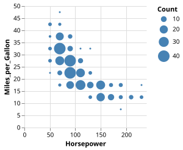

Jupyter Widget#
The VegaFusionWidget is a Jupyter widget for rendering Vega specs backed by VegaFusion. It is based on AnyWidget, and is compatible with a wide range of Jupyter-based environments.
Note
The VegaFusionWidget is only compatible with Vega specifications, not with Vega-Lite. For Vega-Lite, either use the JupyterChart widget from the Vega-Altair project, or convert the Vega-Lite spec to Vega using vl-convert.
Construction#
Construct a VegaFusionWidget from a Vega specification dictionary:
import vegafusion as vf
import json
from vegafusion.jupyter import VegaFusionWidget
vega_spec = json.loads(r"""
{
"$schema": "https://vega.github.io/schema/vega/v5.json",
"description": "A binned scatter plot example showing aggregate counts per binned cell.",
"width": 200,
"height": 200,
"padding": 5,
"autosize": "pad",
"data": [
{
"name": "source",
"url": "data/cars.json",
"transform": [
{
"type": "filter",
"expr": "datum['Horsepower'] != null && datum['Miles_per_Gallon'] != null && datum['Acceleration'] != null"
}
]
},
{
"name": "summary",
"source": "source",
"transform": [
{
"type": "extent", "field": "Horsepower",
"signal": "hp_extent"
},
{
"type": "bin", "field": "Horsepower", "maxbins": 10,
"extent": {"signal": "hp_extent"},
"as": ["hp0", "hp1"]
},
{
"type": "extent", "field": "Miles_per_Gallon",
"signal": "mpg_extent"
},
{
"type": "bin", "field": "Miles_per_Gallon", "maxbins": 10,
"extent": {"signal": "mpg_extent"},
"as": ["mpg0", "mpg1"]
},
{
"type": "aggregate",
"groupby": ["hp0", "hp1", "mpg0", "mpg1"]
}
]
}
],
"scales": [
{
"name": "x",
"type": "linear",
"round": true,
"nice": true,
"zero": true,
"domain": {"data": "source", "field": "Horsepower"},
"range": "width"
},
{
"name": "y",
"type": "linear",
"round": true,
"nice": true,
"zero": true,
"domain": {"data": "source", "field": "Miles_per_Gallon"},
"range": "height"
},
{
"name": "size",
"type": "linear",
"zero": true,
"domain": {"data": "summary", "field": "count"},
"range": [0,360]
}
],
"axes": [
{
"scale": "x",
"grid": true,
"domain": false,
"orient": "bottom",
"tickCount": 5,
"title": "Horsepower"
},
{
"scale": "y",
"grid": true,
"domain": false,
"orient": "left",
"titlePadding": 5,
"title": "Miles_per_Gallon"
}
],
"legends": [
{
"size": "size",
"title": "Count",
"format": "s",
"symbolFillColor": "#4682b4",
"symbolStrokeColor": "transparent",
"symbolType": "circle"
}
],
"marks": [
{
"name": "marks",
"type": "symbol",
"from": {"data": "summary"},
"encode": {
"update": {
"x": {"scale": "x", "signal": "(datum.hp0 + datum.hp1) / 2"},
"y": {"scale": "y", "signal": "(datum.mpg0 + datum.mpg1) / 2"},
"size": {"scale": "size", "field": "count"},
"shape": {"value": "circle"},
"fill": {"value": "#4682b4"}
}
}
}
]
}
""")
VegaFusionWidget(vega_spec)

Debouncing#
The VegaFusionWidget provides configurable debouncing to control how frequently user interaction updates are sent from the browser to the Python kernel.
The widget’s debounce_wait and debounce_max_wait properties correspond to the wait and max_wait properties of the lodash debounce function. VegaFusion uses sensible defaults (debounce_wait of 30ms and debounce_max_wait of 60ms), but it can be useful to increase the default values to handle interactions on large datasets.
Planner Results#
The VegaFusionWidget also supports displaying the results of the planner. See How it Works for more details.
The following properties are available:
widget.spec: This is the original Vega specificationwidget.transformed_spec: This is the initial transformed Vega specification produced by VegaFusionwidget.server_spec: This is the portion of the full Vega spec that was planned to run on the server (The Python kernel in this case)widget.client_spec: This is the portion of the full Vega spec that was planned to run on the client and be rendered by the Vega JavaScript Library.widget.comm_plan: This is the specification of which signals and datasets must be transfered between the client and server in order to preserve the interactive behavior of the original specification.